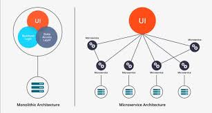
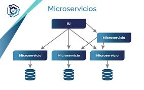
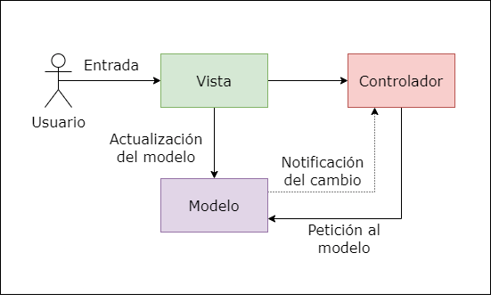
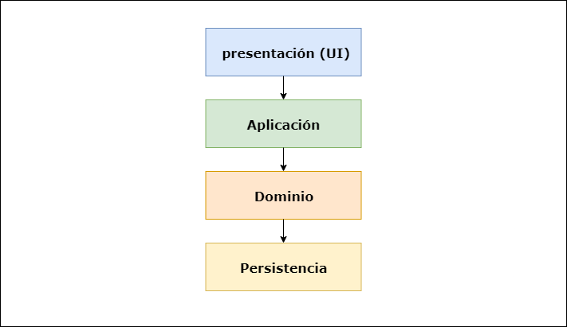

Evolucion de los sistemas
| Concepto: | Imagen |
|---|---|
| Un sistema monolitico es un tipo de arquitectura de software en la que todos los componentes o modulos de una aplicacion estan interconectados o interdependientes, formando una unica unidad solida e indivisible. Con las arquitecturas monolíticas, todos los procesos están estrechamente asociados y se ejecutan como un solo servicio. Esto significa que, si un proceso de una aplicación experimenta un pico de demanda, se debe escalar toda la arquitectura. Agregar o mejorar las características de una aplicación monolítica se vuelve más complejo a medida que crece la base de código. Esta complejidad limita la experimentación y dificulta la implementación de nuevas ideas. Las arquitecturas monolíticas aumentan el riesgo de la disponibilidad de la aplicación porque muchos procesos dependientes y estrechamente vinculados aumentan el impacto del error de un proceso. |  | aws.amazon.com/es/microservices/ |
| Concepto: | Imagen |
|---|---|
| Un microservicio es un estilo de arquitectura de software en el que una aplicación se construye como una colección de servicios pequeños, independientes y débilmente acoplados. Con una arquitectura de microservicios, una aplicación se crea con componentes independientes que ejecutan cada proceso de la aplicación como un servicio. Estos servicios se comunican a través de una interfaz bien definida mediante API ligeras. Los servicios se crean para las capacidades empresariales y cada servicio desempeña una sola función. Debido a que se ejecutan de forma independiente, cada servicio se puede actualizar, implementar y escalar para satisfacer la demanda de funciones específicas de una aplicación. |  | aws.amazon.com/es/microservices/ |
| Concepto: | Imagen |
|---|---|
|
Modelo-Vista-Controlador: Este famoso patrón, también conocido como patrón MVC, divide una aplicación
interactiva en tres partes diferenciadas:
Modelo: Contiene la funcionalidad central y los datos. Vista: Muestra la información al usuario, siempre es posible definir una o más vistas para una misma aplicación. Controlador: Maneja la entrada del usuario. Esto se hace para separar las representaciones internas de la información de las formas en que se presenta y se acepta la información del usuario. De esta manera se desacopla los componentes y permite una reutilización eficiente del código. |
 | openwebinars.net/blog/arquitectura-de-software/ |
| Concepto: | Imagen |
|---|---|
|
Arquitectura en capas: En este patrón se subdivide la estructura del programa en un número de
capas que representan una subtarea, cada una perteneciendo a un nivel de abstracción diferente. Cada capa está
diseñada para proporcionar un servicio a la siguiente capa de mayor nivel. Generalmente se utilizan las siguientes
capas: Presentacion, Aplicacion, Dominio y Persistencia
En una arquitectura en capas, todas las capas se colocan de forma horizontal, de tal forma que cada capa solo puede comunicarse con la capa que está inmediatamente por debajo, por lo que, si una capa quiere comunicarse con otras que están mucho más abajo, tendrán que hacerlo mediante la capa que está inmediatamente por debajo. |
 | openwebinars.net/blog/arquitectura-de-software/ |
| Concepto: | Imagen |
|---|---|
|
Con las tecnologías Cloud Native: se pueden crear y ejecutar aplicaciones
escalables en entornos dinámicos y modernos, permitiendo que sistemas poco acoplados sean manejables y resistentes.
Al combinarse con una automatización sólida, se pueden realizar cambios de alto impacto con un mínimo esfuerzo,
cloud Native permite tener velocidad y agilidad, con sistemas diseñados para aceptar cambios rápidos a gran escala.
Los beneficios de Cloud Native se reflejan en sus principios la posibilidad de que los recursos y aplicaciones escalen horizontal o verticalmente de manera rápida y dinámica, con pocas restricciones en términos del hardware en que se ejecutan. |
 |
aplyca.com/blog/cloud-native-principios/ |